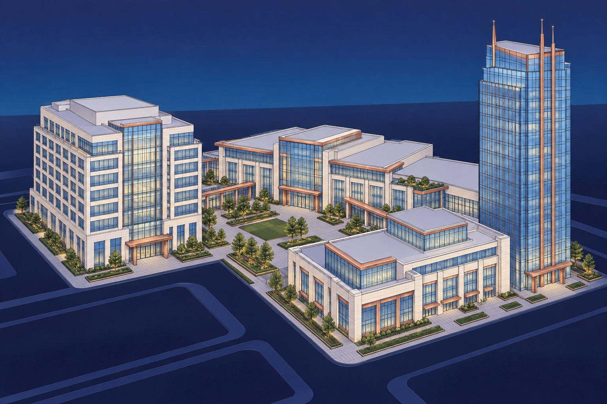

NorthStarWe Bring Answers.
NorthStarWe Bring Answers.Commercial real estateIndustry briefing / 01
Commercial real estate / The recovery priorities
Your property. Their business. A coordinated recovery.
Prepare for property damage with a recovery partner that connects site knowledge, restoration and reconstruction to the priorities of owners and managers.

A building loss reaches beyond the damaged space.
An affected suite, lobby or shared corridor can change how a property operates. Owners need clear priorities and scope. Managers need useful information for tenants. NorthStar brings physical recovery services into that conversation, from a pre-loss review through reconstruction.
01
Know the property
02
Coordinate around tenants
03
Clarify the path to repair
40+ years of experience
Emergency response · Environmental services · Reconstruction